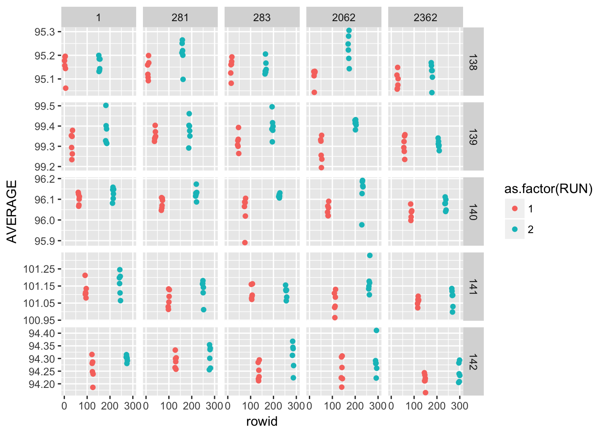

2 Measurement Process Characterization
2.1 Packages used in this chapter
##
## Attaching package: 'magrittr'## The following object is masked from 'package:purrr':
##
## set_names## The following object is masked from 'package:tidyr':
##
## extract2.2 Characterization
2.3 Gauge R & R studies
2.4 Case Studies
2.4.1 Check standard
2.4.1.1 Background and data
The measurements on the check standard duplicate certification measurements that were being made, during the same time period, on individual wafers from crystal #51939. For the check standard there were:
- J = 6 repetitions at the center of the wafer on each day
- K = 25 days
2.4.1.2 Reading the dataset
## Parsed with column specification:
## cols(
## Crystal_ID = col_integer(),
## Wafer_ID = col_integer(),
## Month = col_character(),
## Day = col_character(),
## Hour = col_character(),
## Minute = col_character(),
## Operator = col_integer(),
## Humidity = col_integer(),
## Probe_ID = col_integer(),
## Temperature = col_double(),
## Resistance = col_double(),
## Stdev = col_double(),
## Df = col_integer()
## )## # A tibble: 25 x 14
## rowid Crystal_ID Wafer_ID Month Day Hour Minute Operator Humidity
## <int> <int> <int> <chr> <chr> <chr> <chr> <int> <int>
## 1 1 51939 137 03 24 18 01 1 42
## 2 2 51939 137 03 25 12 41 1 35
## 3 3 51939 137 03 25 15 57 1 33
## 4 4 51939 137 03 28 10 10 2 47
## 5 5 51939 137 03 28 13 31 2 44
## 6 6 51939 137 03 28 17 33 1 43
## 7 7 51939 137 03 29 14 40 1 36
## 8 8 51939 137 03 29 16 33 1 35
## 9 9 51939 137 03 30 05 45 2 32
## 10 10 51939 137 03 30 09 26 2 33
## # ... with 15 more rows, and 5 more variables: Probe_ID <int>,
## # Temperature <dbl>, Resistance <dbl>, Stdev <dbl>, Df <int>2.4.1.3 Level-1 standard deviation
Measurements for J runs over K days for L runs are:
\[ Y_{lkj}(l = 1, \, \ldots, \, L, \,\, k=1, \,\ldots, \, K, \,\, j=1, \,\ldots, \, J) \] The level-1 repeatability (short term precision) is calcuated from the pooled standard deviation over days and runs
\[ s_{1lk} = \sqrt{\frac{1}{J-1} \sum_{j=1}^{J}{(Y_{lkj} - \overline{Y}_{lk{\small \, \bullet}})^2}} \]
with
\[ \overline{Y}_{lk{\small \, \bullet}} = \frac{1}{J}\sum_{j=1}^{J}{\overline{Y}_{lkj}} \] As stated in the e-Handbook: >An individual short-term standard deviation will not be a reliable estimate of precision if the degrees of freedom is less than ten, but the individual estimates can be pooled over the K days to obtain a more reliable estimate.
The pooled level-1 standard deviation estimate with v = K(J - 1) degrees of freedom is \[ s_1 = \sqrt{\frac{1}{K} \sum_{k=1}^{K} s_k^2} \]
## [1] 0.06138795Several comments on the code above. I’ve introduced the %$% operator. This allows me to use indivdual columns from my data frame and is useful for preforming mathematical operations on a specific column of data. It is from the magrittr package.
I find this type of code easy to read and understand. Describing the operations is simple, I’m just working from inside out of the equation:
- creating a new column of data that is \((Stdev)^2\)
- finding the mean of that new column
- taking the square root of that number to give \(s_1\).
2.4.1.4 Level-2 standard deviation (reproducibility)
\[ s_{chkstd} = {\large s}_2 = \sqrt{\frac{1}{K-1} \sum_{k=1}^{K} \left( \overline{Y}_{k \, \small{\bullet}} - \overline{Y}_{\small{\bullet} \small{\bullet}} \right) ^2} \] with
\[ \overline{Y}_{\small{\bullet} \small{\bullet}} = \frac{1}{K} \sum_{k=1}^{K} \overline{Y}_{k \, \small{\bullet}} \]
Which is simply the standard deviation of the daily measuremnts
## [1] 0.026798132.4.1.5 Control chart for standard deviation - Precision
## [1] 0.0928313ggplot(check_standard) +
geom_point(aes(rowid, Stdev)) +
geom_hline(aes(yintercept = UCL_precision_ckkstd), colour = "red", linetype = "dashed") +
labs(title = "Precision control chart", subtitle = "Probe_ID 2362", x = "measurement", y = "ohm.cm", caption = "UCL calcuated at 95% level of confidence") +
annotate("text", x = 0, y = 0.096, label = "UCL", colour = "red")
2.4.1.6 Control chart for measurement bias and variability
The control limits for monitoring the bias and long-term variability of resistivity with a Shewhart control chart are given by
\[ UCL=\text{Average} + 2 \cdot s_2 \\ Centerline=\text{Average} \\ LCL=\text{Average} − 2 \cdot s_2 \\ \]
ggplot(check_standard) +
geom_point(aes(rowid, Resistance)) +
geom_hline(aes(yintercept = (mean(Resistance) + 2*s2_chkstd)), colour = "red", linetype = "dashed") +
geom_hline(aes(yintercept = (mean(Resistance) - 2*s2_chkstd)), colour = "red", linetype = "dashed") +
labs(title = "Shewhart control chart", subtitle = "Probe_ID 2362", x = "measurement", y = "ohm.cm", caption = "Control limits calcuated with k = 2") +
annotate("text", x = 0, y = 97.12, label = "UCL", colour = "red") +
annotate("text", x = 0, y = 97.02, label = "LCL", colour = "red")2.4.2 Gauge study
2.4.2.1 Background and data
Measurements on the check standards are used to estimate repeatability, day effect, and run effect The effect of operator was not considered to be significant for this study; therefore, ‘day’ replaces ‘operator’ as a factor in the nested design. Averages and standard deviations from J = 6 measurements at the center of each wafer are shown in the table.
- J = 6 measurements at the center of the wafer per day
- K = 6 days (one operator) per repetition
- L = 2 runs (complete)
- Q = 5 wafers (check standards 138, 139, 140, 141, 142)
- R = 5 probes (1, 281, 283, 2062, 2362)
Gauge study of resistivity probes
## Parsed with column specification:
## cols(
## RUN = col_integer(),
## WAFER = col_double(),
## PROBE = col_double(),
## MONTH = col_double(),
## DAY = col_double(),
## OP = col_double(),
## TEMP = col_double(),
## AVERAGE = col_double(),
## STDDEV = col_double()
## )## # A tibble: 300 x 10
## rowid RUN WAFER PROBE MONTH DAY OP TEMP AVERAGE STDDEV
## <int> <int> <dbl> <dbl> <dbl> <dbl> <dbl> <dbl> <dbl> <dbl>
## 1 1 1 138. 1. 3. 15. 1. 23.0 95.2 0.119
## 2 2 1 138. 1. 3. 17. 1. 23.0 95.2 0.0183
## 3 3 1 138. 1. 3. 18. 1. 22.8 95.2 0.128
## 4 4 1 138. 1. 3. 21. 1. 23.2 95.2 0.0398
## 5 5 1 138. 1. 3. 23. 2. 23.2 95.1 0.0346
## 6 6 1 138. 1. 3. 23. 1. 23.2 95.1 0.154
## 7 7 1 138. 281. 3. 16. 1. 23.0 95.2 0.0963
## 8 8 1 138. 281. 3. 17. 1. 23.0 95.1 0.0606
## 9 9 1 138. 281. 3. 18. 1. 22.8 95.1 0.0842
## 10 10 1 138. 281. 3. 21. 1. 23.3 95.1 0.0973
## # ... with 290 more rows2.4.2.2 Repeatability standard deviations
2.4.2.3 Effects of days and long-term stability
ggplot(gauge_study) +
geom_point(aes(rowid, AVERAGE, colour = as.factor(RUN))) +
facet_grid(as.factor(WAFER) ~ as.factor(PROBE), scales = "free_y")
2.4.2.4 Differences among 5 probes
probe_means_run <- gauge_study %>%
group_by(PROBE, WAFER, RUN) %>%
summarise(n = n(), probe_mean = mean(AVERAGE)) %>%
unite(join_id, WAFER, RUN, sep = "_", remove = FALSE) %>%
ungroup()
probe_means_run## # A tibble: 50 x 6
## PROBE join_id WAFER RUN n probe_mean
## <dbl> <chr> <dbl> <int> <int> <dbl>
## 1 1. 138_1 138. 1 6 95.2
## 2 1. 138_2 138. 2 6 95.2
## 3 1. 139_1 139. 1 6 99.3
## 4 1. 139_2 139. 2 6 99.4
## 5 1. 140_1 140. 1 6 96.1
## 6 1. 140_2 140. 2 6 96.1
## 7 1. 141_1 141. 1 6 101.
## 8 1. 141_2 141. 2 6 101.
## 9 1. 142_1 142. 1 6 94.3
## 10 1. 142_2 142. 2 6 94.3
## # ... with 40 more rowswafer_means_run <- gauge_study %>%
group_by(WAFER, RUN) %>%
summarise(n = n(), wafer_means = mean(AVERAGE)) %>%
unite(join_id, WAFER, RUN, sep = "_", remove = FALSE) %>%
ungroup()
wafer_means_run## # A tibble: 10 x 5
## join_id WAFER RUN n wafer_means
## <chr> <dbl> <int> <int> <dbl>
## 1 138_1 138. 1 30 95.1
## 2 138_2 138. 2 30 95.2
## 3 139_1 139. 1 30 99.3
## 4 139_2 139. 2 30 99.4
## 5 140_1 140. 1 30 96.1
## 6 140_2 140. 2 30 96.1
## 7 141_1 141. 1 30 101.
## 8 141_2 141. 2 30 101.
## 9 142_1 142. 1 30 94.3
## 10 142_2 142. 2 30 94.3delta_probes <- left_join(probe_means_run, wafer_means_run, by = "join_id") %>%
mutate(delta_probes_wafer = probe_mean - wafer_means)
delta_probes## # A tibble: 50 x 11
## PROBE join_id WAFER.x RUN.x n.x probe_mean WAFER.y RUN.y n.y
## <dbl> <chr> <dbl> <int> <int> <dbl> <dbl> <int> <int>
## 1 1. 138_1 138. 1 6 95.2 138. 1 30
## 2 1. 138_2 138. 2 6 95.2 138. 2 30
## 3 1. 139_1 139. 1 6 99.3 139. 1 30
## 4 1. 139_2 139. 2 6 99.4 139. 2 30
## 5 1. 140_1 140. 1 6 96.1 140. 1 30
## 6 1. 140_2 140. 2 6 96.1 140. 2 30
## 7 1. 141_1 141. 1 6 101. 141. 1 30
## 8 1. 141_2 141. 2 6 101. 141. 2 30
## 9 1. 142_1 142. 1 6 94.3 142. 1 30
## 10 1. 142_2 142. 2 6 94.3 142. 2 30
## # ... with 40 more rows, and 2 more variables: wafer_means <dbl>,
## # delta_probes_wafer <dbl>2.4.2.5 Analysis and interpretation
Table of estimates for probe #2362
A graphical analysis shows repeatability standard deviations plotted by wafer and probe… The plots show that for both runs the precision of this probe is better than for the other probes.
Probe #2362, because of its superior precision, was chosen as the tool for measuring all 100 ohm.cm resistivity wafers at NIST. Therefore, the remainder of the analysis focuses on this probe.
2.4.2.6 probe #2362
## # A tibble: 60 x 10
## rowid RUN WAFER PROBE MONTH DAY OP TEMP AVERAGE STDDEV
## <int> <int> <dbl> <dbl> <dbl> <dbl> <dbl> <dbl> <dbl> <dbl>
## 1 25 1 138. 2362. 3. 15. 1. 23.1 95.1 0.0480
## 2 26 1 138. 2362. 3. 17. 1. 23.0 95.1 0.0577
## 3 27 1 138. 2362. 3. 18. 1. 23.0 95.1 0.0516
## 4 28 1 138. 2362. 3. 22. 1. 23.2 95.1 0.0386
## 5 29 1 138. 2362. 3. 23. 2. 23.3 95.1 0.0256
## 6 30 1 138. 2362. 3. 24. 2. 23.1 95.1 0.0420
## 7 55 1 139. 2362. 3. 15. 1. 23.1 99.3 0.0818
## 8 56 1 139. 2362. 3. 17. 1. 23.0 99.3 0.0723
## 9 57 1 139. 2362. 3. 18. 1. 22.9 99.3 0.0756
## 10 58 1 139. 2362. 3. 22. 1. 23.3 99.4 0.0475
## # ... with 50 more rowsPooled level-1 standard deviations (ohm.cm)
s1_2362_1 <- probe_2362 %>%
filter(RUN == 1) %>%
mutate(Stdev_sq = STDDEV^2) %$%
mean(Stdev_sq) %>%
sqrt()
s1_2362_1## [1] 0.06750898s1_2362_2 <- probe_2362 %>%
filter(RUN == 2) %>%
mutate(Stdev_sq = STDDEV^2) %$%
mean(Stdev_sq) %>%
sqrt()
s1_2362_2## [1] 0.07785664## [1] 0.07286673Level-2 standard deviations (ohm.cm) for 5 wafers
s2_2362 <- gauge_study %>%
group_by(PROBE, WAFER, RUN) %>%
filter(PROBE == 2362) %>%
summarise(df = n()-1, probe_mean = mean(AVERAGE), probe_stdev = sd(AVERAGE), probe_stdev_sq = probe_stdev^2) %>%
group_by(RUN) %>%
summarise(s2_run = sqrt(mean(probe_stdev_sq)))
s2_2362## # A tibble: 2 x 2
## RUN s2_run
## <int> <dbl>
## 1 1 0.0333
## 2 2 0.0388Over both runs
## [1] 0.03616824sd_2362_wafer <- gauge_study %>%
group_by(PROBE, WAFER, RUN) %>%
filter(PROBE == 2362) %>%
summarise(probe_mean = mean(AVERAGE)) %>%
mutate(
run_number = case_when(
RUN == 1 ~ "Run1",
RUN == 2 ~ "Run2"
)
) %>%
dplyr::select(PROBE, WAFER, probe_mean, run_number) %>%
group_by(WAFER) %>%
summarise(sd_wafer = sd(probe_mean))
sd_2362_wafer## # A tibble: 5 x 2
## WAFER sd_wafer
## <dbl> <dbl>
## 1 138. 0.0222
## 2 139. 0.00271
## 3 140. 0.0288
## 4 141. 0.0133
## 5 142. 0.0205s3_2362 <- sd_2362_wafer %>%
mutate(sd_wafer_sq = sd_wafer^2) %$%
mean(sd_wafer_sq) %>%
sqrt()
s3_2362## [1] 0.01964524